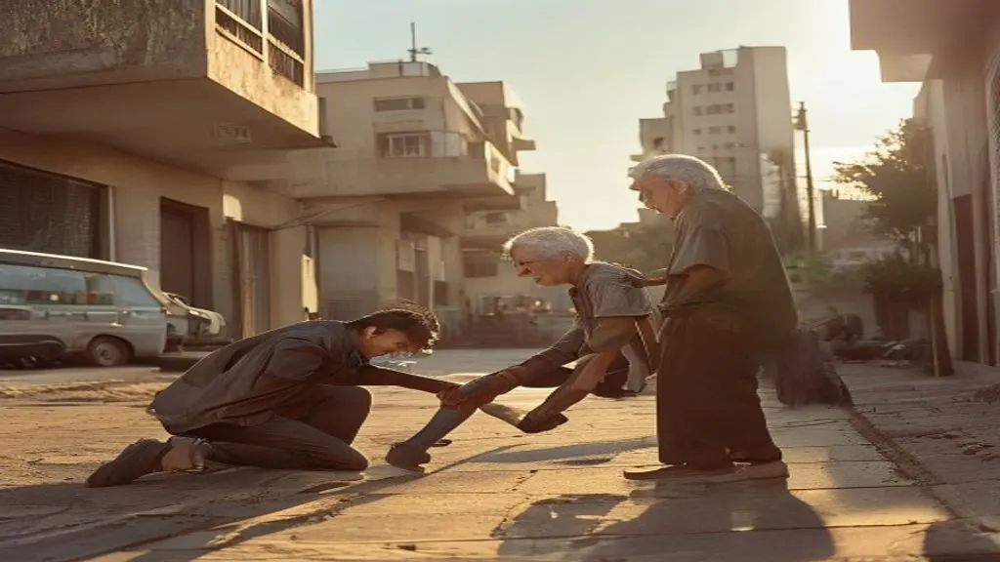
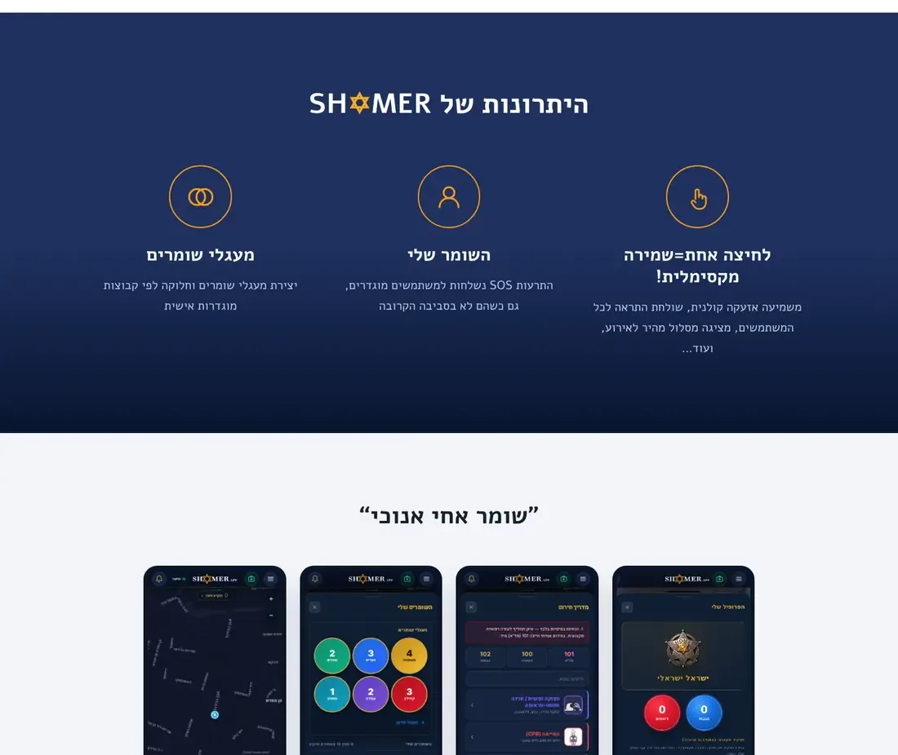
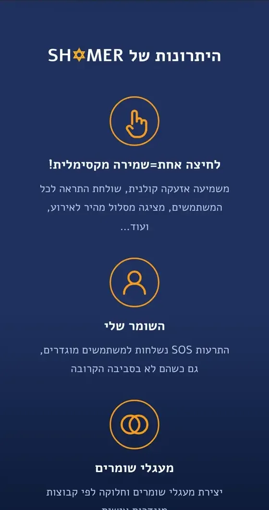
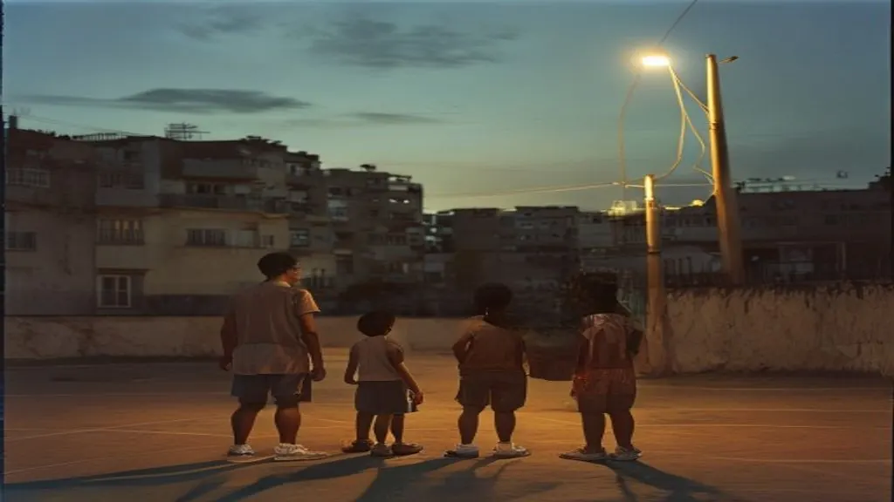
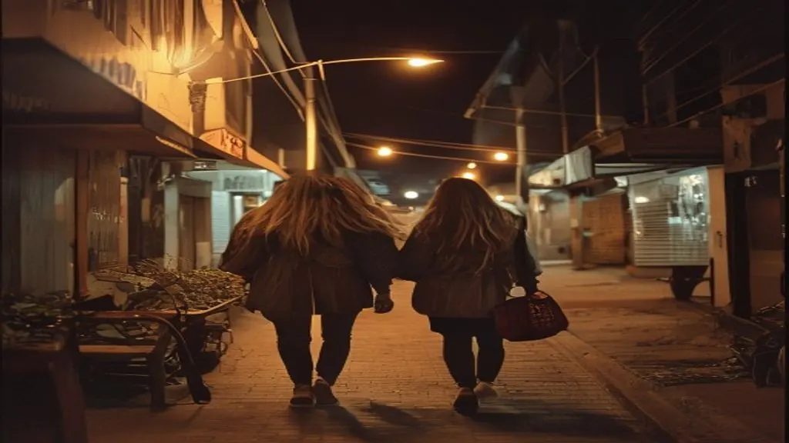

Nearby
The closest neighbour comes first.
One tap alerts SH✡MER users around you and shows them the fastest route.
אזרחים למען אזרחים
Citizens for citizens. SH✡MER is Israel’s community safety network: one tap sends an SOS with your live location to the people you trust and to SH✡MER users nearby.
Closed beta on Google Play · Android
In a moment of danger, the person closest to you can often reach you before anyone else. A neighbour, a passer-by, a friend two streets away. Until SH✡MER there was no simple way to call them.
SH✡MER is a community tool, not an emergency service. It never replaces 100 · 101 · 102. It brings the neighbours in while help is on the way.
Tap SOS to see what one tap does. Illustration only, not live data. Only you carry the ✡; everyone else is a green dot.
Real screens from the app in closed beta. Map, events, people and first aid, all within a thumb’s reach.
Real events appear on the map the moment they are reported. You are the only ✡ on your map; every other user is a quiet green dot.
Each card shows where the report came from, how confident it is and what to do next. Facts, not rumours.

Family, friends and neighbours, grouped your way. Your SOS reaches them even when they are nowhere near.
Clear cards for the worst minutes, read aloud. The CPR card plays a steady compression beat so anyone can keep time.

The public site at shomer-app.co.il, designed RTL-first in Hebrew, and SH✡MER Command, the dashboard communities and councils use to see their area. Hover or tap a frame to scroll it.




One tap alerts SH✡MER users around you and shows them the fastest route.

Your chosen guardians get the alert and your live location, even from across the country.

Your circle sits one tap away, quiet until you need it.
Scenes from the SH✡MER campaign imagery.
“I am my brother’s keeper.” The line the whole brand is built on.
An engraved silver sheriff star carrying a gold Star of David: authority without aggression. Navy for calm, gold for trust, and red kept for one job only.
The ✡ replaces the O in every spelling, in the badge, the wordmark and the name.
Built trilingual: Hebrew, Arabic and English.
Navy is the ground. Gold is for authority and accents. Red is for SOS only, and the SOS button never changes colour.
SH✡MER is not launched yet. Testers are running it now, and every update reaches them on its own.
3Shamrocks Studio designed the SH✡MER brand, the app and the system around it, end to end.